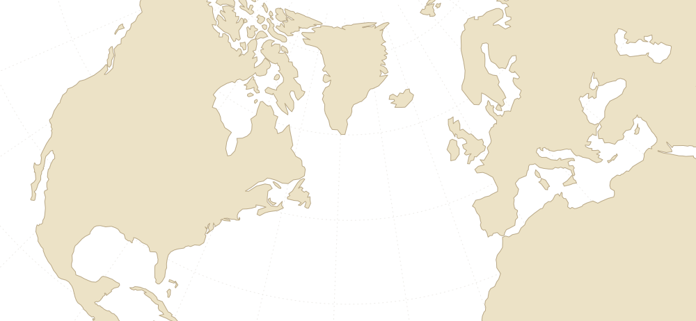
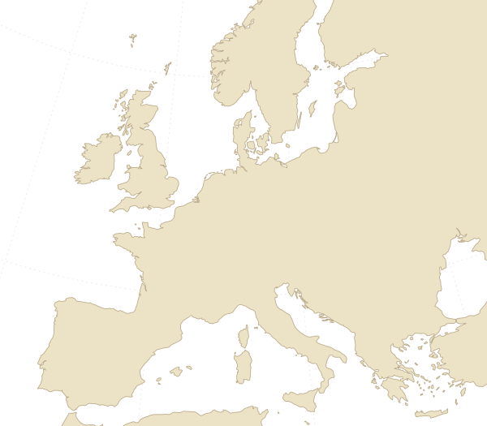

Every community I mention on this site, gathered in one place. They show the other story already exists. Filter by the shape of living together each one takes.
My list below is small and personal. These groups keep the big maps and directories, and they have been at it for years. If you are looking for a place near you, start with them.

